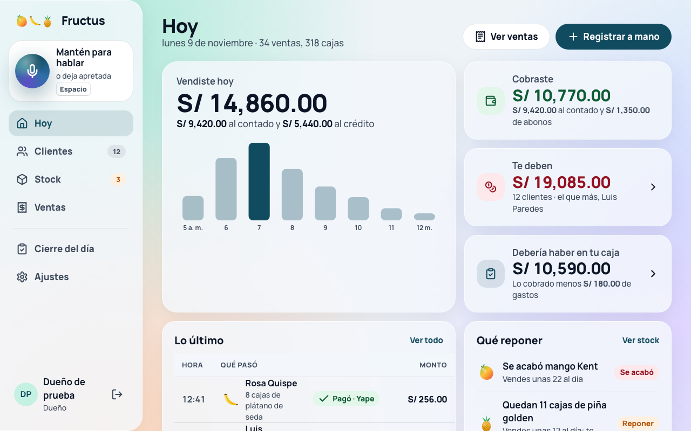
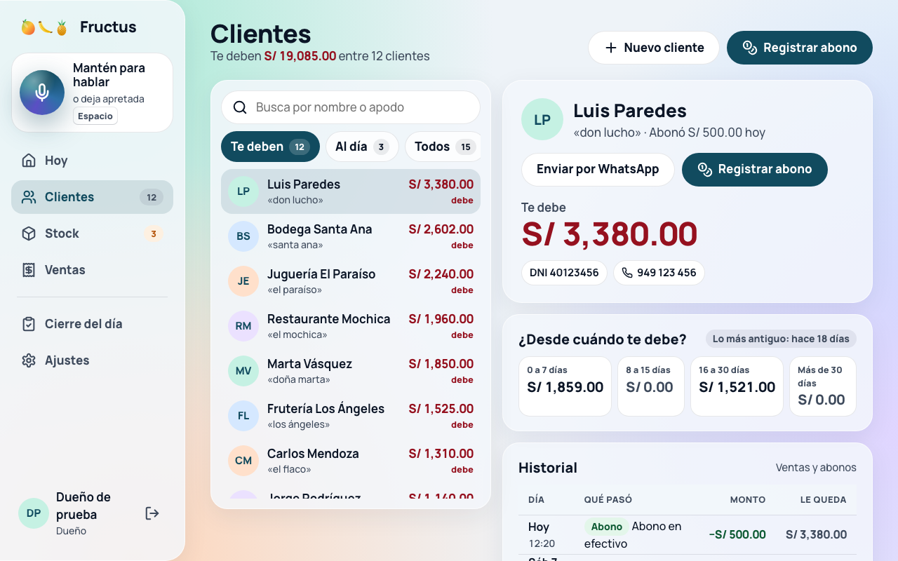
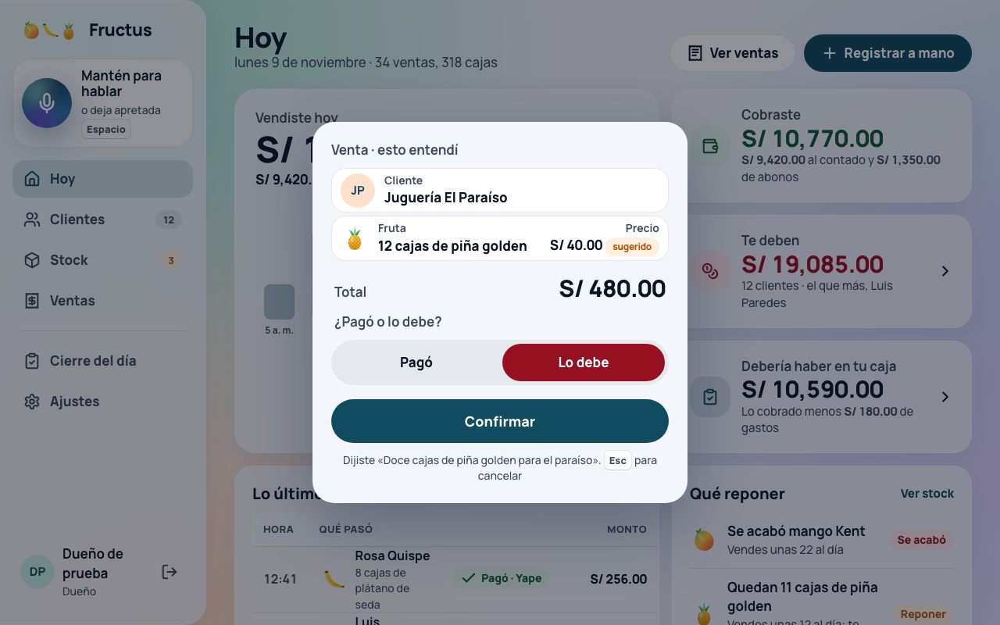
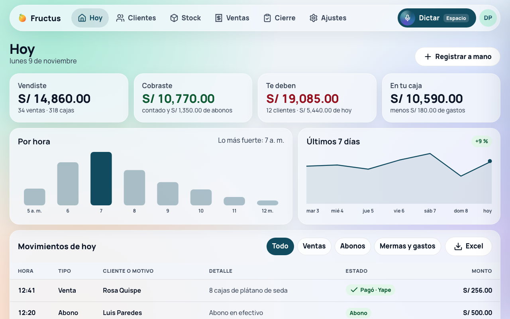
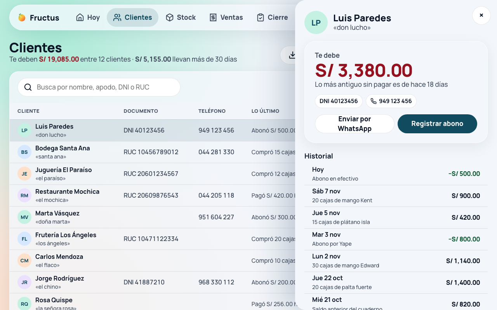
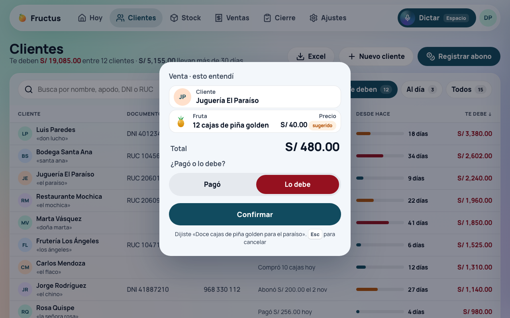
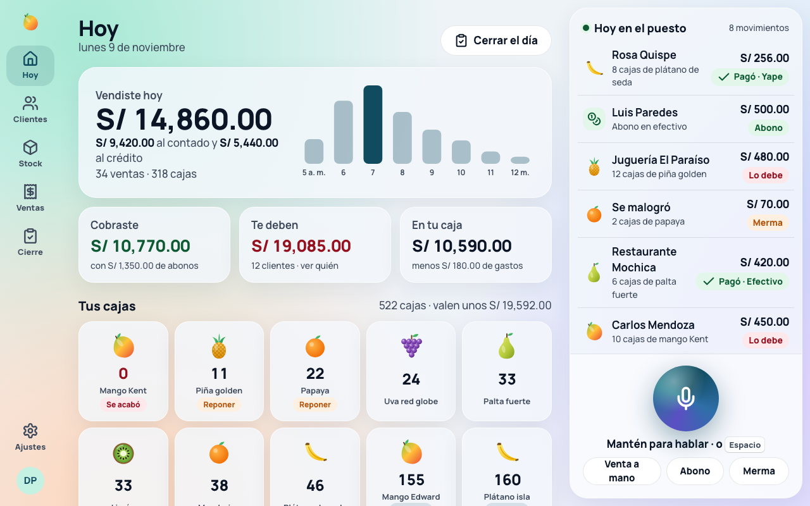
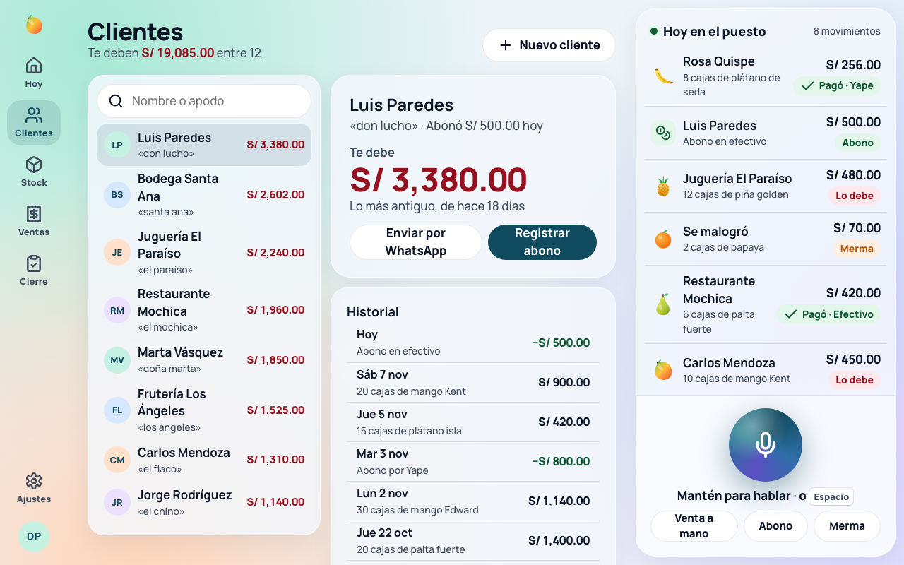
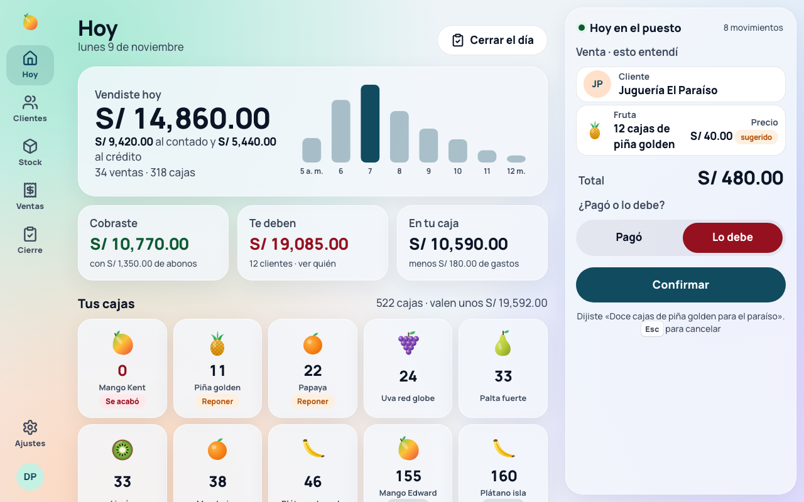

Las tres usan la misma identidad Aurora del celular (colores, Manrope, vidrio, orbe). Cambia solo cómo se acomoda en una pantalla de 1280 px. Cada una dibuja «Hoy» y «Clientes»; el orbe se mantiene apretado con el mouse o con la barra espaciadora y abre la misma tarjeta del celular.
La barra de abajo se vuelve un panel a la izquierda, con la voz arriba de todo y Cierre y Ajustes a la vista. «Hoy» es una grilla con un protagonista (lo vendido y su gráfico) y tres cifras al lado. Clientes es lista a la izquierda y ficha a la derecha, con un bloque nuevo: ¿desde cuándo te debe?



Barra arriba, una franja de cuatro cifras y todo lo demás en tablas que se ordenan, se filtran y van a Excel. La ficha del cliente entra desde la derecha sin perder la tabla. Clientes muestra hace cuántos días te debe cada uno.



Tres zonas: un riel de iconos, la pantalla al centro y un mostrador fijo a la derecha con lo que va pasando hoy y el orbe grande. La tarjeta de lo dictado sale en el mostrador, sin tapar nada, y la venta entra a la lista al confirmar.


